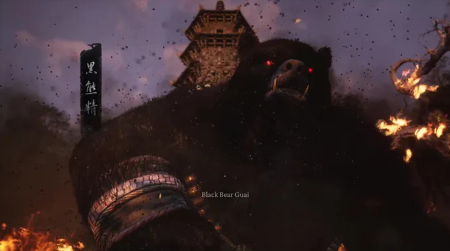

Published August 20, 2024 by Joel Franey
How to beat Black Bear Guai in Black Myth Wukong

The Black Myth Wukong Black Bear Guai boss fight is easily the toughest in the first chapter, requiring you to not
just understand your own abilities, but understand how to best use them to exploit the Guai's weaknesses. There's
also some very helpful items and abilities that you can get across the chapter that, while not essential, can be
incredibly helpful in finally beating the Black Bear for good.
The Guai is a tank of an enemy, focused on impactful, weighty strikes, charging momentum and some incendiary attacks
in the back half of the fight. Your main advantage is that he tends to telegraph most of what he does, using big,
visually-obvious motions, but that hardly makes him easy - it just means that you need to know what's coming and
how to prepare accordingly. That's where we come in to help explain - here's how to beat the Black Myth Wukong Black
Bear Guai boss fight, including weaknesses and strategies.
How to beat the Black Myth Wukong Black Bear Guai Boss Fight
We'll go into more detail on how to beat Black Bear Guai below, but here's a quick summary of the advice for this boss fight:
- Drink the Evil-Repelling Medicament and Longevity Decoction before the fight.
- Use the Immobilize spell when the Guai is in his smoke form to force him back to solidity.
- If set on fire, immediately start rolling until it goes out to prevent damage loss.
- Don't use Varied Attacks - save your Focus points for Charged strikes in Smash Stance.
- At half health, the Guai adds a fire/burning effect to his melee attacks.
- Use Cloud Step sparingly as a chance to heal, then do a surprise attack.
- You should go get the Fireproof Mantle Vessel from Elder Jinchi if you haven't already.
- Likewise, the Red Tides transformation spell dropped by Guangzhi can both do heavy damage, and protect you from it.
Black Bear Guai Weaknesses
The Guai has two major weaknesses that players can exploit successfully: firstly, he's slow, and most
of his attacks are highly telegraphed. This means that evasive players can perfect dodge him relatively easily.
Secondly, many of the Guai's attacks have a specific counter - using Immobilize on his smoke form to force him out
of it, or using the Fireproof Mantle found by ringing the Bells in Black Myth Wukong to protect yourself from all
his fire attacks. By reserving them, you can keep control over the battlefield.
Black Bear Guai Strategies
Before starting the fight properly, drink some buffing medicines at the edge of the arena - the Evil Repelling
Medicament and Longevity Decoction are good options for generally being tougher overall. In fact, medicines
are good enough that we advocate their regular use in our Black Myth Wukong tips and tricks page.
The Black Bear Guai telegraphing his attacks very strongly means that the best strategy for this boss fight
is to keep on the defensive and build your Focus points for a devastating charge attack. Don't use varied
attacks in your light combos - instead, save up for the heavy swings that'll do the most damage. Because
Guai is a large, often slow target, this means you can use a fully-charged Smash Stance heavy attack without
much fear of missing - and do massive damage in the process.
Otherwise, the strategy is defensive agility and light attacks until that point. Use Immobilize to take the Guai
out of his smoke form, use the Fireproof Mantle to protect yourself at the halfway mark when he starts using
fire attacks, and if you get into a bad spot, use the Cloud Step spell as a chance to restore some health, then
retaliate.
Ultimately, if in doubt - back away. Because the Black Bear is such a powerhouse, you can't afford to get
struck if you can avoid it. Keep your distance, safely build Focus, prioritise dodging over attacking and
use your counters to keep him in line before doing for a well-timed Smash. It won't be easy, but you should
get it done before long with this method.
Afterwards, you'll have officially completed Chapter 1, but don't worry - you can go back to previous Black Myth
Wukong chapters if you missed something the first time around (sort of).
© GamesRadar+. Not to be reproduced without permission
Joel Franey, Guides Writer
Joel Franey is a writer, journalist, podcaster and raconteur with a Masters from Sussex University,
none of which has actually equipped him for anything in real life. As a result he chooses to spend most of his time
playing video games, reading old books and ingesting chemically-risky levels of caffeine. He is a firm believer that
the vast majority of games would be improved by adding a grappling hook, and if they already have one, they should
probably add another just to be safe. You can find old work of his at USgamer, Gfinity, Eurogamer and more besides.
Source: Game Science